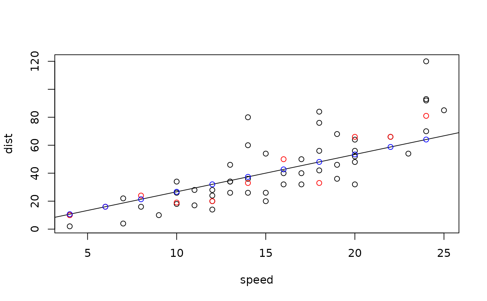

This class represents a generalized linear model with negative binomial distribution. It inherits from GLM and implements its functions that, for example, evaluate the conditional density and distribution functions.
Super classes
gofreg::ParamRegrModel -> gofreg::GLM -> NegBinomGLM
Methods
Method fit()
Calculates the maximum likelihood estimator for the model parameters based on given data.
Arguments
datatibble containing the data to fit the model to
params_initinitial value of the model parameters to use for the optimization (defaults to the fitted parameter values)
loglikfunction(data, model, params)defaults tologlik_xy()inplacelogical; ifTRUE, default model parameters are set accordingly and parameter estimator is not returned
Method f_yx()
Evaluates the conditional density function.
Arguments
tvalue(s) at which the conditional density shall be evaluated
xmatrix of covariates, each row representing one sample
paramsmodel parameters to use (
list()with tags beta and shape), defaults to the fitted parameter values
Method F_yx()
Evaluates the conditional distribution function.
Arguments
tvalue(s) at which the conditional distribution shall be evaluated
xmatrix of covariates, each row representing one sample
paramsmodel parameters to use (
list()with tags beta and shape), defaults to the fitted parameter values
Method F1_yx()
Evaluates the conditional quantile function.
Arguments
tvalue(s) at which the conditional quantile function shall be evaluated
xmatrix of covariates, each row representing one sample
paramsmodel parameters to use (
list()with tags beta and shape), defaults to the fitted parameter values
Method sample_yx()
Generates a new sample of response variables with the same conditional distribution.
Arguments
xmatrix of covariates, each row representing one sample
paramsmodel parameters to use (
list()with tags beta and shape), defaults to the fitted parameter values
Examples
# Use the built-in cars dataset
x <- datasets::cars$speed
y <- datasets::cars$dist
data <- dplyr::tibble(x=x, y=y)
# Create an instance of a NegBinomGLM
model <- NegBinomGLM$new()
# Fit a Negative Binomial GLM to the cars dataset
model$fit(data, params_init = list(beta=3, shape=2), inplace=TRUE)
params_opt <- model$get_params()
# Plot the resulting regression function
plot(datasets::cars)
abline(a = 0, b = params_opt$beta)
# Generate a sample for y for given x following the same distribution
x.new <- seq(min(x), max(x), by=2)
y.smpl <- model$sample_yx(x.new)
points(x.new, y.smpl, col="red")
# Evaluate the conditional density, distribution and regression function at given values
model$f_yx(y.smpl, x.new)
#> [1] 0.077345791 0.056077154 0.011906806 0.035204869 0.032896518 0.027610999
#> [7] 0.025304046 0.015420072 0.008513775 0.013565876 0.001254328
model$F_yx(y.smpl, x.new)
#> [1] 0.611621163 0.276354590 0.932065207 0.611401112 0.497503546 0.292373558
#> [7] 0.337944975 0.129075639 0.872742488 0.732897873 0.005280128
y.pred <- model$mean_yx(x.new)
points(x.new, y.pred, col="blue")
